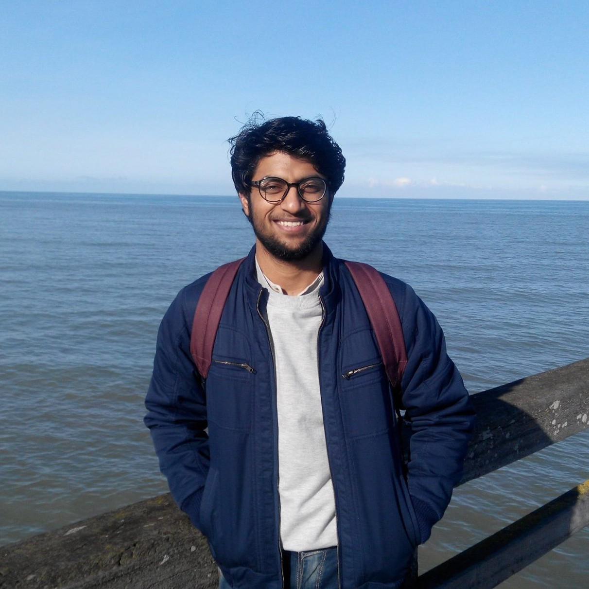

Govind
PhD Student
Team HULTECH, GREYC - CNRS UMR 6072
Room S3-364
Université de Caen Normandie
Department of Computer Science
Campus Côte de Nacre
F-14032 Caen Cedex, France
govind@unicaen.fr
+33 2 31 56 73 98
PhD Student
Team HULTECH, GREYC - CNRS UMR 6072
Room S3-364
Université de Caen Normandie
Department of Computer Science
Campus Côte de Nacre
F-14032 Caen Cedex, France
govind@unicaen.fr
+33 2 31 56 73 98
About
Welcome! I am a PhD student at GREYC lab, Université de Caen advised by Prof. Marc Spaniol. My broad research interests are Natural Language Processing (NLP) and Web Science. Currently, I am working on the entity-level impact analytics of events on the Web. Yes, officially my full name is "Govind".
Education
- Université de Caen Normandie (Unicaen), France
PhD in Computer Science, November 2015 onwards - Indian Institute of Technology Patna (IIT), India
Master of Technology, Mathematics and Computing, July 2012-May 2014, Chairman’s Gold Medalist
Thesis: Multiobjective Optimization and Unsupervised Lexical Acquisition for Information Extraction - Technische Universität Darmstadt (TU), Germany
Master of Technology, Mathematics and Computing, Semester Exchange, September 2013-March 2014 - Guru Jambheshwar University of Science and Technology Hisar (GJUST), India
Bachelor of Technology, Computer Science and Engineering, July 2008-May 2012
Publications
- Govind, Céline Alec, Marc Spaniol, Semantic Fingerprinting: A Novel Method for Entity-level Content Classification. Proceedings of the 18th International Conference on Web Engineering (ICWE 2018) 2018, Cáceres, Spain. BibTeX
- Govind, Céline Alec, Marc Spaniol, ELEVATE-live: Assessment and Visualization of Online News Virality via Entity-level Analytics. Proceedings of the 18th International Conference on Web Engineering (ICWE 2018) 2018, Cáceres, Spain. Online Interface BibTeX
- Govind, Marc Spaniol, ELEVATE: A Framework for Entity-level Event Diffusion Prediction into Foreign Language Communities. Proceedings of the 9th International ACM Web Science Conference (WebSci’17) 2017, Troy, NY. BibTeX
- Govind, Asif Ekbal and Chris Biemann, Multiobjective Optimization and Unsupervised Lexical Acquisition for Named Entity Recognition and Classification. Proceedings of the 11th International Conference on Natural Language Processing (ICON) 2014, Goa, India. BibTeX
Awards and Recognitions
- Scholarship Grant for the WSTNet Web Science Summer School 2018 at L3S, Hannover, Germany.
- ACM SIGWEB Student Travel Award for 9th International ACM Web Science Conference 2017, NY, USA.
- Chairman’s Gold Medal for 1st rank among all postgraduate students at IIT Patna, India.
- DAAD fellowship for semester exchange at Technische Universität Darmstadt, Germany (DAAD-IIT Master sandwich program).
- Postgraduate scholarship for master studies at IIT Patna (GATE).
- Undergraduate scholarship by MHRD, Govt. of India for outstanding performance in higher secondary (Scheme of Scholarship for College and University Students).
Programming Tools
- Programming langs: Java, Python
- Machine learning libraries: Scikit-learn, Keras, Tensorflow, CoreNLP
- Database systems: Apache HBase, PostgreSQL
- Large-scale data processing: Apache Spark, Hadoop